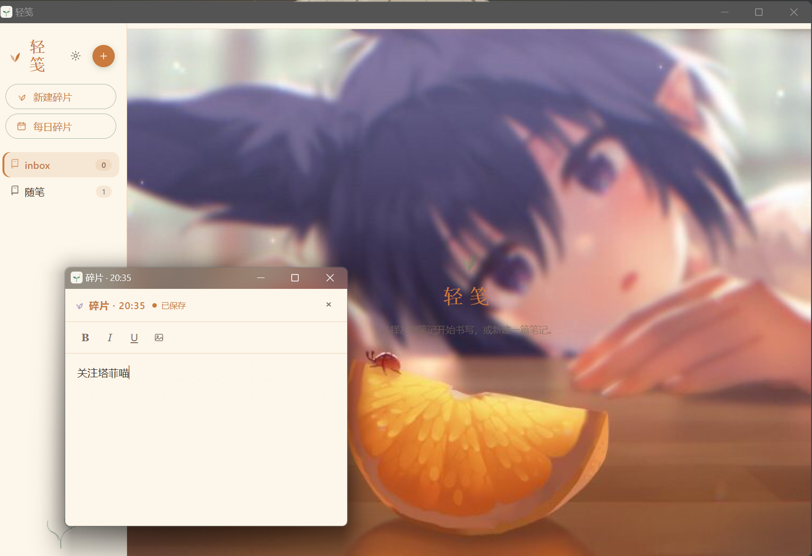
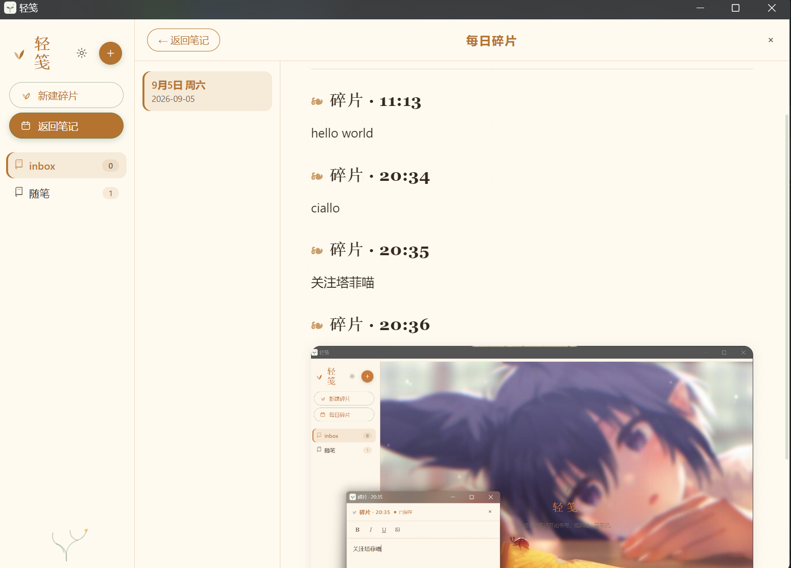
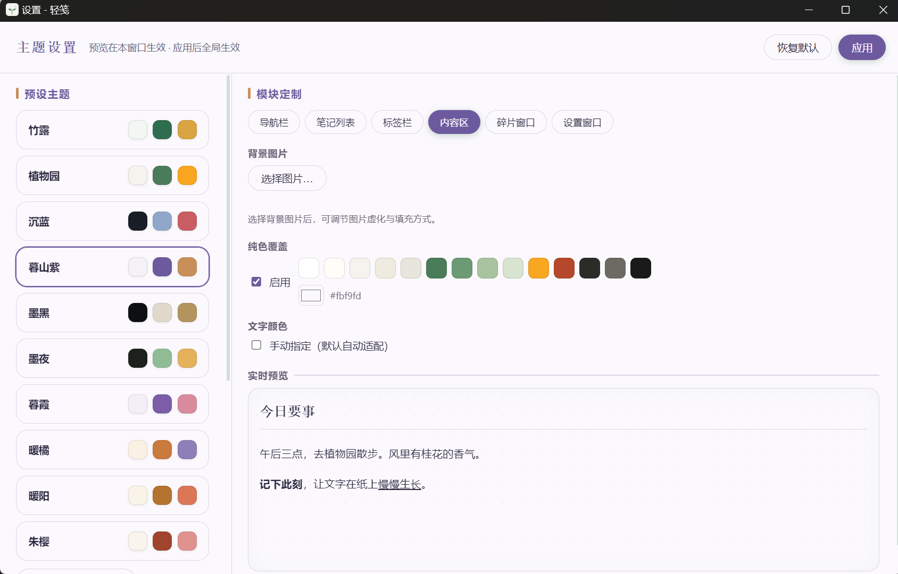
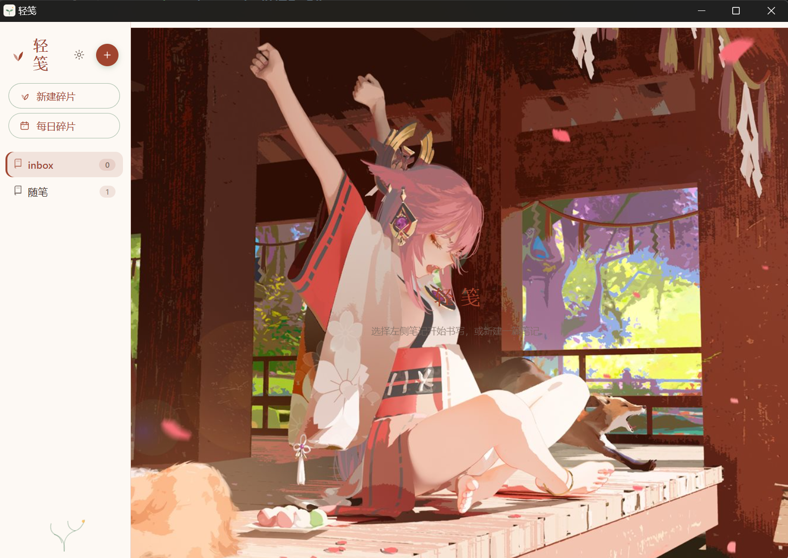
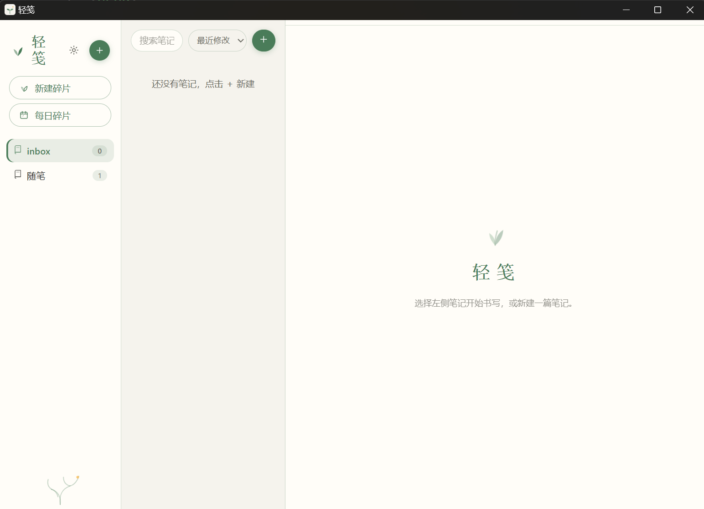
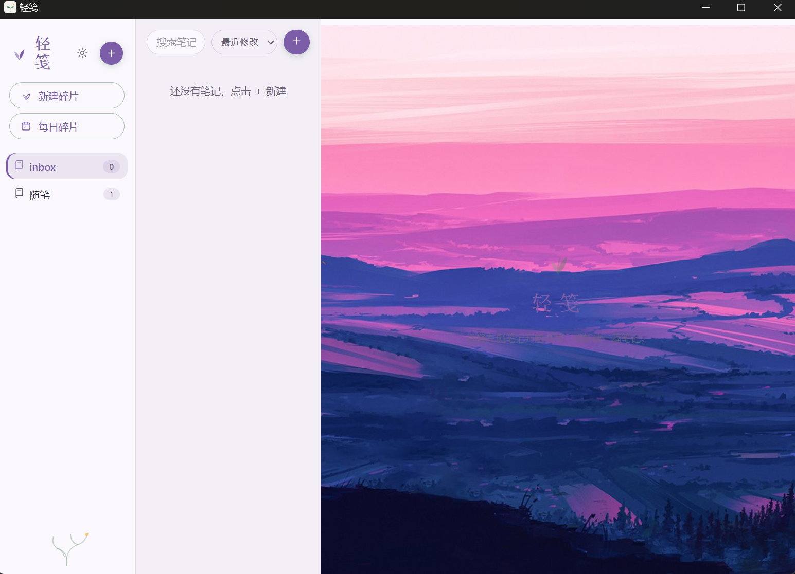
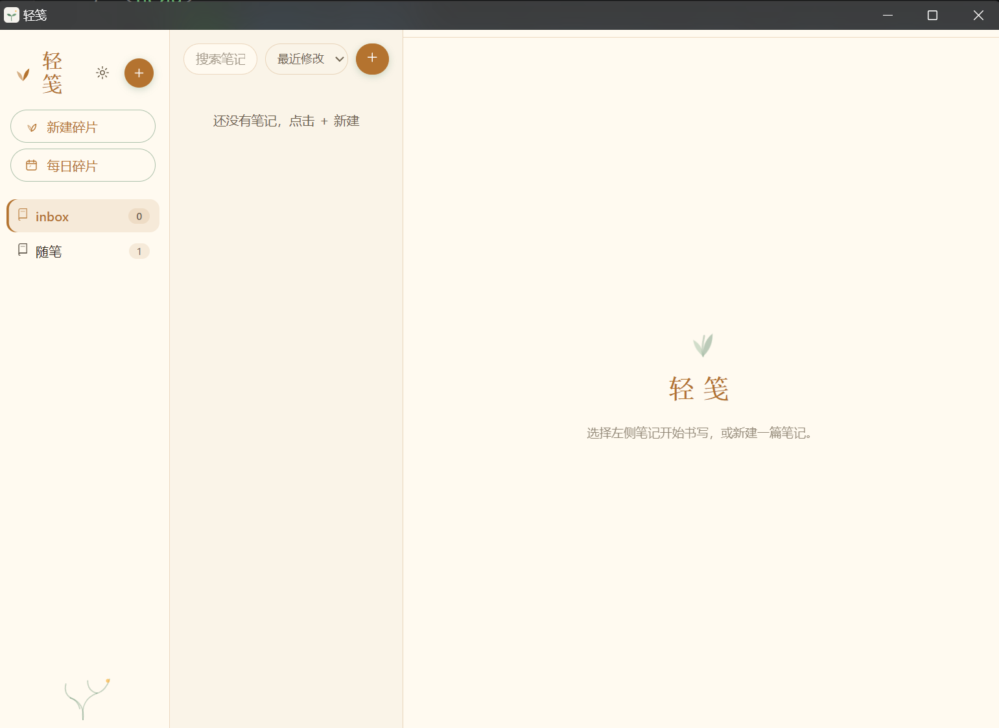
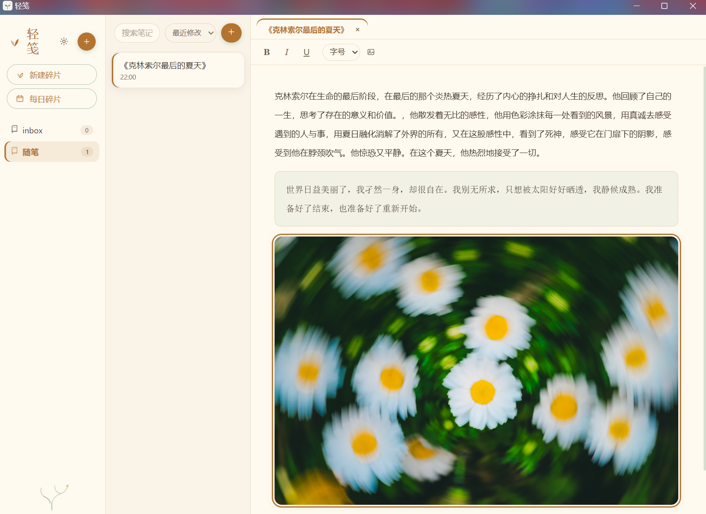

01
每日碎片记录
每日碎片设计,可随时唤醒“碎片窗口”——灵感闪过时,一条文字或一张图片, 几秒钟完成记录。轻笺按天自动归档,回看时每一天都清晰有序。
- 多开碎片小窗,输入即自动保存
- 当日碎片实时整合进按日期命名的 Markdown 文件
- 进程重启或意外崩溃也不丢数据





02
高度自由的个性化
部件化的设计——导航栏、笔记列表、内容区、碎片窗口,每个模块都可独立装扮。 支持背景图片更改,从多色预设到自己的照片,把轻笺变成你喜欢的样子。
- 每个模块独立设置背景图片与雾化模糊
- 文字颜色自动对比度适配(WCAG),可手动覆盖
- 窗口级 Mica / 亚克力质感,预设即插即用

03
内容区简洁但不简单
自由控制文字样式、支持区域划分与图片上传——写日记、做清单、存灵感, 一页之内各得其所。所有内容以 Markdown 存于本地,任何编辑器都能打开。
- 字号 12–32px 自由调节,加粗 / 斜体 / 下划线
- 支持区域划分,一页之内各得其所
- 剪贴板粘贴或选择文件即可插入图片